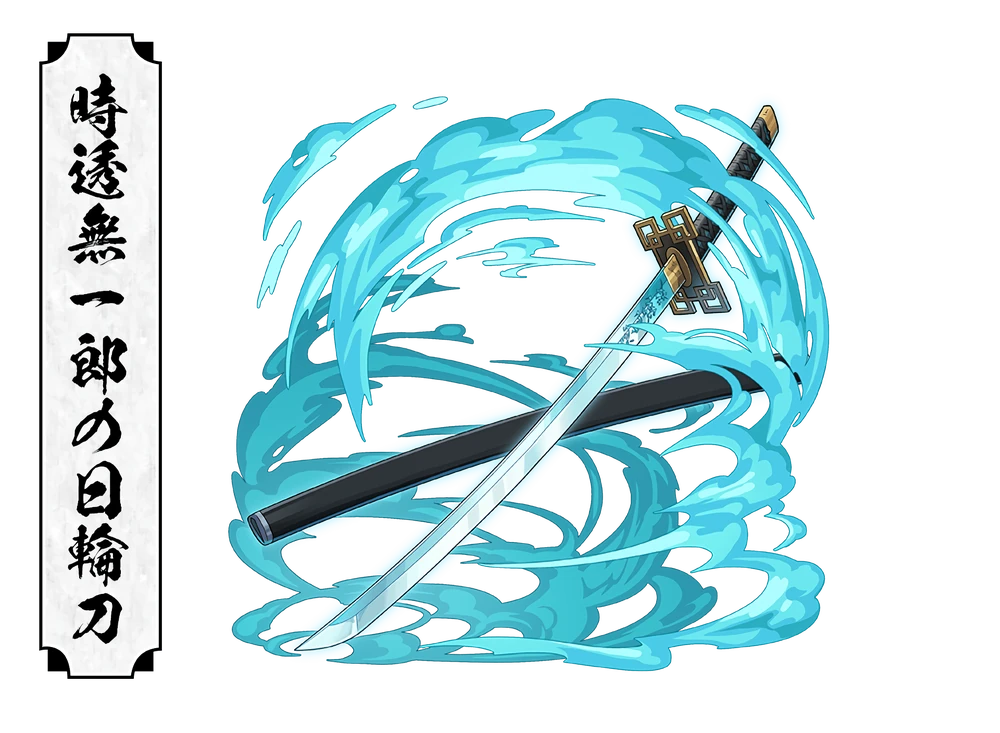

"No matter how many people you may lose, you have no choice but to go on living"
About
Muichiro Tokito is the Mist Hashira of Demon Slayer Corps and one of the youngest hashira in history despite becoming a Hashira only two month after joining the corps, his extraordinary talent and natural swordsmanship quickly earned him the respect of his fellow hashiras
Although he initially appears distant, absent-minded, and emotionless due to memory loss, he gradually rediscovers his past and becomes a compassionate warrior who fights to protect others. His increadible speed, precision, and mastery of mist breathing make him one of the strongest demon slayers of his generation.
Basic Information
Full Name : Muichiro Tokito
Japenese Name : 時透 無一郎
Alias : Mist Hashira
Gender : Male
Race : Human
Age : 14 (P.S. Bro's the OG Teen Dayumnn)
Birthday : August 8
Height : 160 cm (5'3")
Weight : 56 kg (123 lbs)
Hair Color : Black with Turquoise Tips
Eye Color : Mint Green
Occupation : Demon Slayer
Rank : Hashira
Affilation : Demon Slayer Corps
Breathing Style : Mist Breathing
Status : Deceased
Appearance
Muichiro has long black hair that graduallly fades into turquoise at the ends, giving him a mist like appearance. his mint green eyes and calm expression make him seem detached from the world around him. He wears the standard Demon Slayer Corps uniform with oversized sleeves, reflecting his relaxed personality
Personality
At first, Muichiro appears quiet, emotionless, and forgetful because of his lost memories. He often seems distracted and indifferent, paying little attention to those around him
After recovering his memories he becomes kind, caring, and fiercely protective of others. Beneath his calm exterior lies remarkable determination and courage
Fighting Style
Muichiro is a prodigy who mastered mist breathing, a derivative of wind breathing. His techniques rely on speed, unpredictable movements, and illusions that confuses opponents, his swordsmanship is so fast and fluid that enemies often lose sight of him entirely
Mist breathing forms
First Form : Low Clouds, Distant Haze
Second Form : Eight Layered Mist
Third Form : Scattering Mist Splash
Fourth Form : Shifting Flow slash
Fifth Form : Sea of clouds and haze
Sixth Form : Lunar Dispersing Mist
Seventh Form : Obscuring clouds (own created)
Nichirin Sword

Color : White
Type : Katana
Guard : Rectangular with hollow corners
Specality : Fast, unpredictablesword strikes
Abilities
Mist Breathing Master
Extraordinary Swordsmanship
Exceptional Speed
High Agility
Tactical Intelligence
Demon Slayer Mark
Transparent World
Crimson Nichirin Blade
Major Battles
Gyokko (Upper Rank 5)
Kokushibo (Upper Rank 1)
Infinity Castle Battle
Relationships
Yuichiro Tokito
Muichiro's older twin brother,whose sacrifice deeply shaped his life
Kagaya Ubuyashiki
The Leader of demon slayer corps, whom muichiro greatly respected
Tanjiro Kamado
Tanjiro helps him regain his memories and compassionate nature
Trivia
Muichiro became a hasira in only two months, making him one of the fastest to achieve the rank
He is a descendant of Kokushibo
he created seventh form : Obscuring Clouds
Despite his age, he is among the strongest hashira
he awakened both the demon slayer mark and Transparent world
Legacy
Muichiro's Sacrifice during the battle against kokushibo proves that true strength is not defined by age but by courage and determination. His legacy continues to inspire future generations of Demon Slayer.